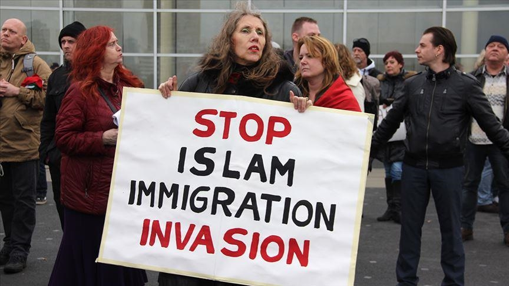
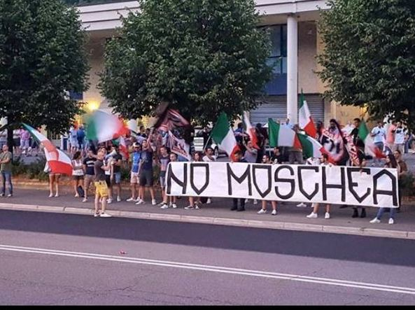
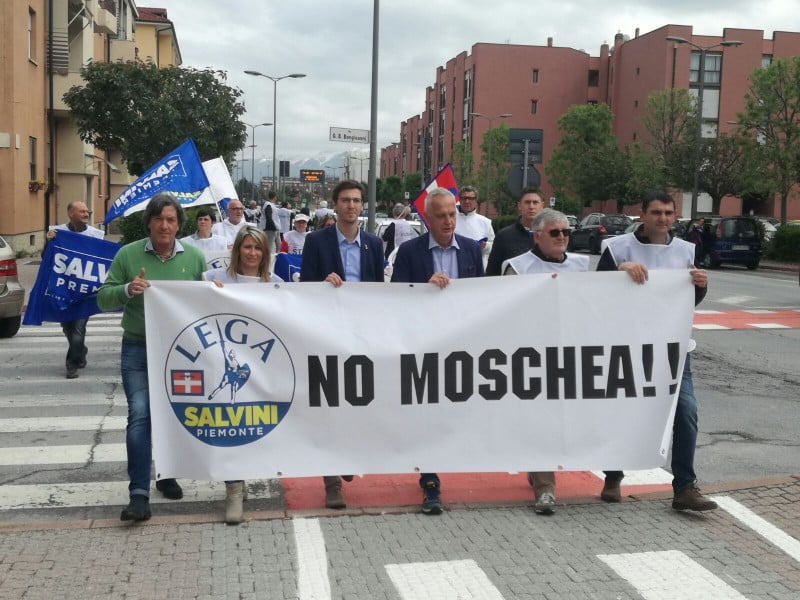

Media and Examples
Examples of media, films, or images depicting Islamophobia...



A detailed analysis of Islamophobia in Italy, including its social, political, and economic implications.
Italy has a rich and diverse history dating back to ancient civilizations such as the Etruscans and Romans. In the medieval period, Italy was a center of trade, culture, and art during the Renaissance. The unification of Italy in the 19th century marked the establishment of the modern Italian state.
As of 2022, Italy has a population of approximately 58,853,482 people. The population is characterized by regional diversity, with significant cultural differences between northern and southern Italy.
Italy is predominantly Roman Catholic, with the majority of the population adhering to the Catholic faith. However, there is also religious diversity in Italy, with minority religious communities including Muslims, Jews, Buddhists, and Hindus. The Muslim population in Italy has grown in recent decades due to immigration from Muslim-majority countries in North Africa, the Middle East, and South Asia.
Italy has faced challenges related to Islamophobia, including discrimination, prejudice, and anti-Muslim sentiment. This has been exacerbated by factors such as immigration, security concerns, and political rhetoric.
Giorgia Meloni is Italys prime minister, known for her strong stance on immigration and Islam. Meloni has been an outspoken critic of what she perceives as the challenges posed by Islamic culture and immigration to European societies.
Meloni garnered significant attention for her controversial statement that "Islam has no place in Europe" and her assertion that there is a compatibility problem between Islam and Western values. These remarks sparked intense debate and drew both praise and criticism from various quarters.
Despite facing backlash for her polarizing views, Meloni remains a popular figure among conservative voters who share her concerns about the impact of immigration on cultural identity and national security. She has been a leading advocate for stricter immigration policies and increased border controls.
While some applaud Meloni for raising important questions about integration and cultural cohesion, others condemn her statements as inflammatory and divisive. Nevertheless, her influence in shaping the discourse on immigration and multiculturalism in Italy cannot be overlooked.
Anna Cisint is a prominent political figure in Italy known for her controversial views on immigration and Islam. She rose to prominence as mayor of Monfalcone. Cissint is known for her strong stance against immigration from Muslim-majority countries and has been accused of using Islamophobic rhetoric in her electoral campaigns.
Despite facing criticism from human rights organizations and opposition parties, Cissint has garnered support from a segment of the population who share her concerns about national security and cultural integration. She banned prayer in Islamic cultural centers and has been vocal about Muslim woman wearing modest clothing at the beach. In addition, she has been involved in various legislative efforts to tighten immigration policies and increase surveillance of Muslim communities.
Cissint's political career has been marked by controversy, with some praising her for addressing what they perceive as legitimate security concerns, while others condemn her for promoting discrimination and xenophobia. Her influence extends beyond political circles, as she has been featured prominently in media outlets and public debates on immigration and multiculturalism in Italy.
Silvia Sardone is an Italian politician and member of the European Parliament. She has been noted for her active criticism of the hijab and combating perceived Islamic extremism.
Sardone's recent adoption of security measures, such as traveling with a bodyguard, comes in response to perceived security threats. These measures underscore the broader context of tensions in Italy, which she attributes in part to the ongoing conflict in the Middle East.
In her public statements, Sardone has voiced concerns about the potential risks posed by Islamic extremists. She has also expressed views regarding what she perceives as the growing influence of supremacist interpretations of Islam in Europe.
Her rallies emphasize the values of liberty and democracy in the context of combating terrorism, anti-Semitism, and Islamist extremism. Her views reflect a broader discourse on the challenges of radicalism and the integration of diverse communities in Europe and Italy, often invoking criticism of what she sees as inadequate responses from European institutions.
Examples of media, films, or images depicting Islamophobia...
Legal restrictions on Muslims and immigrants/refugees from Muslim-majority states...
Anna Momigliano explains, “Muslim organizations agreed to create a registry of their imams and to require them to preach in Italian. In return, the government vowed to “facilitate the path” toward the official recognition of Islam in Italy.”(“In Italy, Islam doesn’t officially exist. Here’s what Muslims must accept to change that.”) Momigliano's analysis highlights the negotiation between Muslim organizations and the government, where compliance with state requirements is exchanged for promises of recognition. This dynamic underscores the government's attempt to exert control over religious expression and mandating Italian as the imam's language to prevent any secrecy among Islamic institutions, further demonstrating the Italian government's suspicion around any and all Muslim activity.
Economic restrictions including bank accounts, business loans, and financial oversight...
Italian Interior Minister Angelino Alfano announced that, "The financial guards created a unit that specializes in monitoring the financial transactions coming from Islamic countries. This decision was made in parallel with the orders that I gave to monitor jihadist activities in Italy, according to the recommendations made by the committee of strategic analysis for the fight against terrorism"(“Italy: Islamic Institutions Under Surveillance”). Minister Alfano's announcement indicates his intent to monitor financial transactions from Islamic countries, aligning with efforts to combat jihadist activities. However, this surveillance overlooks the religious obligation of charity in Islam, choosing instead to view financial contributions with suspicion and necessitating monitoring. This approach not only undermines the religious freedom of Muslims but also perpetuates discrimination and suspicion within Italian society. "The Islamic cultural centers in Italy are financed by Saudi Arabia where Sharia is in force. In Europe there is a very Islamization process distant from the values of our civilization" said Italy's Prime Minister Giorgia Meloni (“No place for Islamic culture in Europe, says Italy's Giorgia Meloni at far right event”). The aforementioned statements reveal that it isn’t only a select few that hold these stereotypical views on Islam but these feelings are held by those in the highest office. Instead of Italian officials promoting unity they're creating division. This us vs them dynamic leaves Italian Muslims under the designation of second class citizens.
Surveillance, emergency regulations, and terrorism-related restrictions...
Government-led integration efforts and requirements for imams to preach in Italian demonstrate attempts to control Islamic practices in the name of countering extremism. Italian Interior Minister Angelino Alfano is quoted, “the council aimed at further integrating Muslim immigrants, preventing extremism, training imams and validating the establishment of new mosques(“Italy’s security approach to Islam”). These initiatives suggest that the Italian government seeks to regulate Islamic practices under the guise of promoting integration and countering extremism. Countering extremism is seen as the step to prevent a future terrorist attack, painting Islam and terrorism as one and the same. In addition, requiring training and validation demonstrates the state's control over religious expression, singling out Muslims because no other religious group receives this sort of treatment. A clear example of undermining religious freedom and contributing to the marginalization of Muslim communities.
Organizations or groups countering Islamophobia in Italy...
Un Ponte Per: “Building Bridges Not Walls”
Stop Islamophobia: “Combating the structural drivers of anti-Muslim racism through research, advocacy, capacity building outreach and innovative visual reports from across Europe”
Amnesty International: "We uncover the truth and hold the powerful to account"
Organizations such as the Italian Council for Interreligious Dialogue (CIDI) organize cultural exchange programs between Muslims and non-Muslims. These programs may include mosque visits, where non-Muslims are invited to learn about Islamic practices and beliefs firsthand, fostering understanding and dispelling misconceptions.
The UNAR (National Office against Racial Discrimination) in Italy runs campaigns to combat discrimination, including Islamophobia. These campaigns raise awareness about the rights of religious minorities and encourage reporting of discrimination incidents. UNAR also provides legal support and guidance to victims of discrimination.
Initiatives like the "Dialogues in the Mosque" program, organized by local Islamic centers and interfaith groups, bring together members of the Muslim community with residents from surrounding neighborhoods. These dialogues provide a platform for open discussions, Q&A sessions, and cultural exchanges to promote understanding and integration.
Organizations like Associazione Carta di Roma monitor media coverage of Islam and Muslims in Italy, highlighting instances of bias or misrepresentation. They work with journalists and media outlets to promote responsible reporting and accurate portrayal of Islam, contributing to a more informed public discourse.
Legal clinics, such as those run by the Association for Juridical Studies on Immigration (ASGI), provide free legal assistance to immigrants and refugees facing discrimination or human rights violations, including Islamophobia. These clinics offer legal advice, representation, and advocacy to ensure that victims have access to justice.
Youth-led initiatives like "Youth for Peace" engage young people from diverse backgrounds, including Muslim and non-Muslim youth, in activities promoting intercultural dialogue and social cohesion. These programs offer workshops, leadership training, and community projects to empower youth as agents of change in combating prejudice and discrimination.
Amnesty International. (2023). Amnesty International. Amnesty.org. https://www.amnesty.org/en/
Ghiglione, G. (2019, August 14). The resurgence of Oriana Fallaci’s anti-Islam message in Italy. Www.aljazeera.com. https://www.aljazeera.com/features/2019/8/14/the-resurgence-of-oriana-fallacis-anti-islam-message-in-italy
Stop Islamophobia. (n.d.). About. Retrieved April 15, 2024, from https://stop-islamophobia.eu/about/
Un Ponte Per. (n.d.). Home. Un Ponte Per. https://www.unponteper.it/en/
“No Place for Islamic Culture in Europe, Says Italy’s Giorgia Meloni at Far Right Event.” The Economic Times, 18 Dec. 2023, economictimes.indiatimes.com/news/international/world-news/italy-pm-giorgia-meloni-makes-loaded-comment-on-islam-at-far-right-event/articleshow/106079509.cms.
“Italy: Islamic Institutions under Surveillance.” Morocco World News, 9 Aug. 2016, www.moroccoworldnews.com/2016/08/193598/italy-islamic-institutions-surveillance.
Faytre, Léonard. “Italy’s Security Approach to Islam.” SETA, 12 Oct. 2018, www.setav.org/en/italys-security-approach-to-islam/.
Momigliano, Anna. “In Italy, Islam Doesn’t Officially Exist. Here’s What Muslims Must Accept to Change That.” The Washington Post, 8 Feb. 2017, www.washingtonpost.com/news/worldviews/wp/2017/02/08/in-italy-islam-doesnt-officially-exist-heres-what-muslims-must-accept-to-change-that/.
Beccaro, Andrea, and Stefano Bonino. “Terrorism: Tackling the Threat to Italy’s ‘Exceptionalism.’” Istituto per Gli Studi Di Politica Internazionale, 24 Jan. 2020, www.ispionline.it/en/publication/terrorism-tackling-threat-italys-exceptionalism-24918.
Giuffrida, Angela. “Italian Town in Turmoil after Far-Right Mayor Bans Muslim Prayers.” The Guardian, 18 Feb. 2024, www.theguardian.com/world/2024/feb/18/italian-town-monfalcone-rightwing-mayor-muslim-prayers-ban.
Galici, Francesca. “Nuova Moschea in Via Padova a Milano: ‘Come Un Ghetto Islamico.’” ilGiornale.It, il Giornale, 28 Oct. 2022, www.ilgiornale.it/news/milano/milano-nuova-moschea-padova-trasformata-ghetto-islamico-2080153.html.